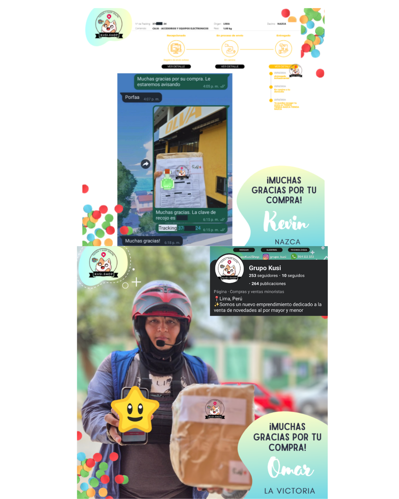

Grupo Kusi.
Detectando oportunidades de mercado antes de aprender la teoría. Detecting market opportunities before learning the theory.
Insight
Durante la pandemia observé cambios muy claros en el comportamiento del consumidor: aumentó el uso de videojuegos, creció la práctica del ciclismo y muchas personas comenzaron a buscar productos que mejoraran su experiencia dentro de casa. Ese cambio despertó mi interés por entender cómo las tendencias podían convertirse en oportunidades reales de negocio. During the pandemic, I observed clear shifts in consumer behavior: gaming increased, cycling grew, and people sought products to enhance their at-home experience. This shift sparked my interest in how trends could become real business opportunities.
EjecuciónExecution
Creé un pequeño emprendimiento de importación donde gestioné todo el proceso de principio a fin. I created a small import venture managing the entire process from end to end.
- Investigación de tendencias de consumo y detección de oportunidades.Consumer trend research and opportunity detection.
- Selección del portafolio según comportamiento del mercado.Portfolio selection based on market behavior.
- Negociación directa con proveedores de China.Direct negotiation with suppliers in China.
- Gestión de importaciones junto al operador logístico.Import management alongside the logistics operator.
- Creación de contenido para redes sociales.Content creation for social media.
- Atención al cliente y ventas B2B / B2C.Customer service and B2B / B2C sales.
- Gestión logística de envíos a Lima y provincias.Logistics management for shipments to Lima and provinces.
- Administración integral del negocio.Comprehensive business administration.
Lo que aprendíLearnings
Descubrí que construir una marca empieza mucho antes de vender: comienza entendiendo al consumidor, detectando necesidades reales y diseñando una propuesta de valor capaz de responder a ellas. I discovered that building a brand starts long before selling: it begins by understanding the consumer, detecting real needs, and designing a value proposition capable of responding to them.
